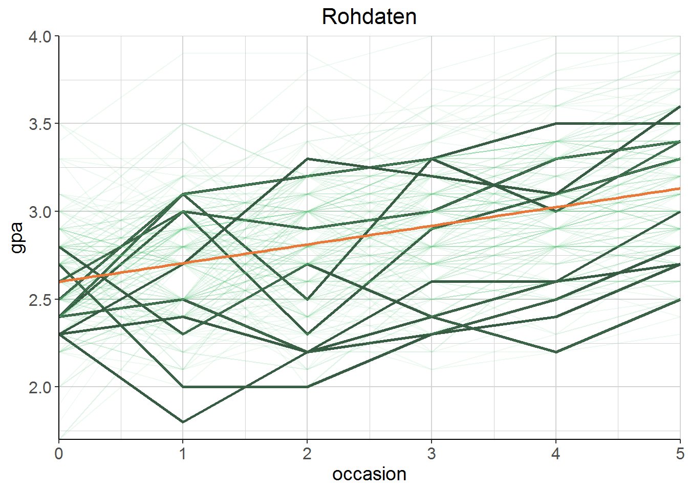

4 Random intercept models
4.1 Generelle Logik
Studenten werden an verschiedenen Zeitpunkten (occasions) getestet (GPA). Zeitpunkte sind ein Haupteffekt. Individuelle Effekte der Studenten werden Modell hinzugefügt:
\[ \mathrm{gpa}=b_{\mathrm{intercept}}+b_{\mathrm{occ}} \cdot \text { occasion }+\left(\text {effect }_{\mathrm{student}}+\epsilon\right) \]
- Der einzige Unterschied zwischen einem mixed model und einer standardmäßigen Regression: random student effect
- Normalverteilt mit \(M = 0\) und irgendeiner geschätzten Standardabweichung \(\tau\)
- Im Mittel kein Effekt, aber variiert von Student zu Student im Mittel um \(\tau\)
\[ \text{effect}_\text{student} \sim \mathscr { N } ( 0 , \tau ) \]
Jeder Student hat seinen eigenen Effekt, der zum allgemeinen intercept hinzugefügt wird. Das heißt, jeder Student hat sein eigenes intercept, mit anderen “Worten”:
\[ \mathrm{gpa}=b_{\mathrm{int} \text { student }}+b_{\mathrm{occ}} \cdot \text { occasion }+\epsilon \] Das heißt: Intercepts sind jetzt normalverteilt. Das overall Intercept als Mittelwert mit irgendeiner SD \(\tau\).
\[ b_{\text { int } \text { student }} \sim \mathscr{N}\left(b_{\text { intercept }}, \tau\right) \]
Wenn man die einzelnen Studenten plottet, sieht man gut, wieso es eine gute Idee ist, die Individualität pro Student zu berücksichtigen: Die Variablität in den Startpunkten und die Entwicklung über die Zeit ist ist hoch.
load("data/gpa.RData")
# Random 10 Einzellinien highlighten
gpa <- gpa %>%
mutate(highlight = ifelse(student %in% sample(unique(student), 10), TRUE, FALSE))gpa %>%
ggplot(aes(x = occasion, y = gpa)) +
geom_line(aes(group = student, colour = highlight, alpha = highlight,
size = highlight)) +
geom_smooth(method = "lm", colour = farbschema[1], se = FALSE) +
scale_alpha_manual(values = c(.1, 1)) +
scale_size_manual(values = c(.5, 1)) +
scale_colour_manual(values = pick_colour(2, "mono_green")) +
labs(title = "Rohdaten") +
julis_theme +
theme(legend.position = "none") +
scale_y_continuous(expand = c(0, 0)) +
scale_x_continuous(expand = c(0, 0))
\(\to\) Siehe Skript uebungen.R – Übung #1 für einfache Regression.
4.1.1 Problem einfache Regression
- Clustering wird ignoriert.
- Man verpasst die (interessanten) Studenten-Effekte.
- Die Standardfehler sind biased \(\to\) Aussagen über statistische Signifikanz werden hinfällig
- Eine Regression pro Student
- hätte zu wenig Daten.
- “over-contextualised” \(\to\) ignoriert, was die Studenten gemeinsam haben
4.2 in R
Notation, um das Intercept 1 pro Student variieren zu lassen: (1|student). Ich benutze broom bzw. broom.mixed, um die Modelle aufgeräumt darzustellen. Im Code verwendet er summary, aber das ist da eher ein Krampf. Interessanterweise räumt er selbst seine Tabellen vor der Darstellung auch auf. Vermutlich per Hand.
\(\to\) Siehe Skript uebungen.R – Übung #2 für mixed Model.
gpa_mixed <- lmer(gpa ~ occasion + (1|student), data = gpa)
gpa_mixed_coef <- tidy(gpa_mixed)
gpa_mixed_fit <- glance(gpa_mixed)4.2.1 Vergleich einfache Regression vs. mixed model
Mixed model hat keine p-values im Output - auch nicht mit summary.
Interessant hierzu in mitgeliefertem Notebook mixed_models_basics.Rmd: “People always ask where the \(p\)-values are, but the answer is… complicated. Other packages and programs present them as if they are trivially obtained, but that is not the case, and the lme4 developers would rather not make unnecessary assumptions. On the plus side, you can get interval estimates easily enough, even though they are poorly named for the variance components. sigma01 is the student variance.”
Später schreibt er dazu, dass man in mixed models verschiedene Stichprobengrößen von Cluster zu Cluster hat, sowie das N der Gesamtstichprobe. Was es schwierig macht, eine Referenzverteilung zu bestimmen, bzgl. Freiheitsgrade und so.
Das Paket lmerTest bietet allerdings Möglichkeiten, um \(p\)-Werte auszuspucken und wird scheinbar auch von den lme4-Leuten empfohlen bzw. ist in der Literatur etabliert. Siehe Manual hier.
| term | estimate | std.error | statistic | p.value |
|---|---|---|---|---|
| (Intercept) | 2.599 | 0.018 | 145.651 | p < .001 |
| occasion | 0.106 | 0.006 | 18.037 | p < .001 |
| effect | group | term | estimate | std.error | statistic |
|---|---|---|---|---|---|
| fixed | NA | (Intercept) | 2.599 | 0.022 | 119.800 |
| fixed | NA | occasion | 0.106 | 0.004 | 26.096 |
| ran_pars | student | sd__(Intercept) | 0.252 | NA | NA |
| ran_pars | Residual | sd__Observation | 0.241 | NA | NA |
- Koeffizienten der fixed effects sind dieselben wie in der normalen Regression!
- Ist nicht immer der Fall, z.B. bei unbalancierten Daten - aber sollte wohl meistens dicht dran sein.
- Hier: Studenten starten mit einem GPA von 2.6 und jedes Semester kommen .11 Punkte dazu.
- Standardfehler unterscheiden sich; der fürs Intercept ist gestiegen, der für den Messzeitpunkt ist runter gegangen.
- Wir haben mehr Infos über das Individuum und drücken gleichzeitig gesteigerte Unsicherheit über Average (Intercept) aus.
- Ganz interessant (wenn auch eher eine vorsichtige offene Frage): Siehe Frömer et al. (2018) p. 7 vs. p. 11. Offenbar ist es möglich, dass fixed Effects mal signifikant werden und mal nicht, je nachdem, ob random Effects mit eingeschlossen sind oder nicht. Der Standardfehler kann durch die Hinzunahme von random Effects sowohl sinken als auch steigen (siehe oben: Intercept vs. Messzeitpunkteffekt). Im Paper ist aber auf p. 11 die Rede von einem sinkenden Estimate - es ist nicht ganz klar, auf was es sich bezieht; offenbar auf den Effekt selbst. Dessen Schätzung sollte ja eigentlich unbeeinflusst sein von den random Effects.
| r.squared | adj.r.squared | sigma | statistic | p.value | df |
|---|---|---|---|---|---|
| 0.21 | 0.21 | 0.35 | 325.34 | 0.00 | 2.00 |
| logLik | AIC | BIC | deviance | df.residual |
|---|---|---|---|---|
| -437.49 | 880.98 | 896.25 | 145.67 | 1198.00 |
| sigma | logLik | AIC | BIC | REMLcrit | df.residual |
|---|---|---|---|---|---|
| 0.24 | -204.45 | 416.89 | 437.25 | 408.89 | 1196.00 |
- Achtung, Verwirrung: Ich bekomme hier mit
broomin beiden Fällen sigma, die residual standard deviation. Wenn ich diesummary-Funktion auf das mixed model anwende, finde ich diesen Wert als residual standard deviation in der Tabelle Random effects. Inlmheißt das aber residual standard error (in der Auflistung unterhalb der Tabelle). Das ist aber dasselbe und ist wohl nur falsch benannt! (siehe z.B. hier)- Beides ist jedenfalls inhaltlich dasselbe, aber die Werte unterscheiden sich: Die unaufgeklärte Varianz wurde aufgeteilt.
- Im mixed model findet man dieselbe Information auch noch mal in der Tabelle (3.2) in der Zeile
ran_pars - Residual - sd__Observation, Spalteestimate. - Entsprechend gibt
estimatein der Zeile darüber (ran_pars - student - sd__(Intercept)) die geschätzte Standardabweichung vom fixed effect an, mit anderen Worten: Wie sehr wir vom “normalen” (fixed) effect abweichen, wenn wir uns von Student zu Student bewegen (sprich: \(\tau\) in der Formel oben).- Scores variieren von Student zu Student mehr als doppelt so viel wie von Semester zu Semester!
Siehe hier abgefahrener Code, wie man nur diese Info ohne broom extrahiert:
print(VarCorr(gpa_mixed), comp = c("Var", "Std")) ## Groups Name Variance Std.Dev.
## student (Intercept) 0.063719 0.25243
## Residual 0.058089 0.24102Das können wir auch direkt nutzen (die Varianz steckt im Broom-Output nicht drin), um die Varianz, die durch die Studenten aufgeklärt wird in Bezug zur Gesamtvarianz zu setzen: .064 / .064 + .058 = 1.058. Genauer gesagt ist das das Verhältnis der Varianz between clusters zur Gesamtvarianz in \(y\). Das ist dann die intraclass correlation, weil das gleichzeitig auch ein Schätzer der Korrelation innerhalb eines Clusters ist.
4.2.1.1 Zugriff auf die geschätzten Abweichungen einzelner Individuen
Hier wird also geschätzt, wie sehr jeder Student vom mittleren Intercept abweicht (im Mittel um 0!). Schätzungen bezeichnet man - höhö - als BLUPs oder EBLUPs (= (empirical) best linear unbiased prediction). Im Workshop unter Application \(\to\) Estimates of the random effects findet sich auch Code, um geschätzte Intervalle für die Effekte via Bootstrapping zu finden und sehr schick zu plotten.
(random_effects <- ranef(gpa_mixed)$student)4.2.1.2 … addiert zu den fixed effects
Hier werden die individuellen Effekte zu den fixed effects dazugerechnet; damit erhalten wir random coefficients. Für occasion ändert sich nichts, weil wir nicht erlaubt haben, dass der slope pro Student variiert.
(random_coefficients <- coef(gpa_mixed)$student)Konfidenzintervalle für die Standardfehler kann man auch kriegen. .sigma bezieht sich auf die Schätzung für - klar - sigma (= residual standard error) und .sig01 bezieht sich auf die Varianz durch die Studenten.
confint(gpa_mixed)## 2.5 % 97.5 %
## .sig01 0.22517423 0.2824604
## .sigma 0.23071113 0.2518510
## (Intercept) 2.55665145 2.6417771
## occasion 0.09832589 0.11430274.2.2 Predictions plotten
Sehr nice: Mal der Vergleich für die ersten drei Studenten für
- das linear model
- das mixed model mit den random effects “disabled”
- … was hier dasselbe ist wie das lineare model.
- das mixed model inklusive random effects
TO DO: Wenn random slopes dazu kommen, coolen Plot mit Estimate für jeden einzelnen Studenten darstellen. Auch als coole animierte Version, siehe Introduction.
# a)
predict_mixed_no_re <- predict(gpa_mixed, re.form = NA)
# b)
predict_mixed <- predict(gpa_mixed)
# c)
predict_lm <- predict(gpa_lm)df_predictions <- data.frame(student = gpa$student, occasion = gpa$occasion,
gpa = gpa$gpa, mixed_no_re = predict_mixed_no_re,
mixed = predict_mixed, lm = predict_lm) %>%
filter(student %in% 1:3)
df_for_plot <- data.frame(
source = c(case_when(df_predictions$student == 1 ~ "mixed student 1",
df_predictions$student == 2 ~ "mixed student 2",
df_predictions$student == 3 ~ "mixed student 3"),
rep("linear model", 6)),
occasion = c(df_predictions$occasion, 1:6),
gpa = c(df_predictions$gpa, rep(NA, 6)),
prediction = c(df_predictions$mixed,
df_predictions$lm[df_predictions$student == 1])
)df_for_plot %>%
ggplot(aes(x = occasion)) +
geom_point(aes(y = gpa, colour = source)) +
geom_smooth(aes(y = prediction, colour = source), se = FALSE, method = "lm",
fullrange = TRUE) +
scale_colour_manual("prediction", values = c(pick_colour(5, "farbschema")),
guide = guide_legend(nrow = 2, byrow = 2)) +
julis_theme\(\to\) Siehe Skript uebungen.R – Übung #2 für dasselbe nochmal, nur diesmal mit Schlaf-Beispieldaten.
\(\to\) Siehe Skript uebungen.R – Übung #3 Cluster Level Covariance (d.h. mehr fixed effects … ?) für die GPA-Daten
4.3 Simulationen
Zum besseren Verständnis: Rumspielen mit verschiedenen Parametern von simulierten Daten und das entsprechende Resultat im mixed model. In den Notes anstatt in den Übungen, weil echt hilfreich. Übersicht aller Modelle und Density Plots nebeneinander in der Tabelle unten.
“In what follows we’ll change various aspects of the data, then rerun the model after each change […]. For each note specifically at least one thing that changed in the results.”
0. First calculate or simply eyeball the intraclass correlation coefficient:
\[\frac{\textrm{random effect variance}}{\textrm{residual + random effect variance}}\] In addition, create a density plot of the random effects.
4.3.1 Run 1 - default
# vorgegebener Code siehe mixed_models_basics.Rmd
# Aber das geht so nicht - das muss erst mal in eine Funktion
rand_int_sim <- function(Ngroups = 100, NperGroup = 3, sdRandIntercept = .5,
sdError = .25, sdFixedEffect = .5, AvIntercept = 2){
N <- Ngroups * NperGroup
groups <- factor(rep(1:Ngroups, each = NperGroup))
u <- rnorm(Ngroups, sd = sdRandIntercept)
e <- rnorm(N, sd = sdError)
x <- rnorm(N)
y <- AvIntercept + sdFixedEffect * x + u[groups] + e
return(data.frame(x = x, y = y, groups = groups))
}Which of the above represent the fixed and random effects?
x = fixed effect; u[groups] = random effect
set.seed(2806)
run1 <- rand_int_sim()
model1 <- lmer(y ~ x + (1|groups), data = run1)
tidy(model1) %>%
mutate_at(.vars = c("estimate", "std.error", "statistic"),
.funs = force_decimals) %>%
kable() %>%
kable_styling("striped")| effect | group | term | estimate | std.error | statistic |
|---|---|---|---|---|---|
| fixed | NA | (Intercept) | 1.95 | 0.05 | 37.89 |
| fixed | NA | x | 0.50 | 0.02 | 32.65 |
| ran_pars | groups | sd__(Intercept) | 0.50 | NA | NA |
| ran_pars | Residual | sd__Observation | 0.23 | NA | NA |
Einmal die Tabelle hier zur Veranschaulichung, alles Weitere in der Vergleichstabelle für alle Läufe unten. Intraclass Correlations und Density Plots ebenfalls unten.
Hier sehen wir aber zunächst, dass sich die von uns spezifizierten Parameter genau im Modell ablesen lassen: Die Residual Standard Deviation liegt bei .23 - wir haben dem error term e in der Simulation ja .25 zugewiesen. x wird (fast) genau wie spezifiziert auf .5 geschätzt. Und das Intercept passt auch: 1.95 (übergeben: 2). Das Intercept der groups hat eine Standard Deviation von .50 - passt auch beinahe genau. Bin noch nicht vollkommen sicher, wie ich die aufgeklärte Varianz beurteilen soll.
tb_intracl <- as.data.frame(formatVC(VarCorr(model1), comp = c("Var", "Std"))) %>%
mutate(Variance = as.numeric(as.character(Variance)))
intracl1 <- (tb_intracl$Variance[1] / sum(tb_intracl$Variance)) * 100Intraclass correlation: Groups klären \(81.99\) \(\%\) der Gesamtvarianz auf.
4.3.2 Run 2 - Different random effect variance
1. Change the random effect variance/sd and/or the residual variance/sd and note your new estimate of the ICC, and plot the random effect as before.
set.seed(2806)
run2 <- rand_int_sim(sdRandIntercept = 1)
model2 <- lmer(y ~ x + (1|groups), data = run2)Siehe Zusammenfassung unten: Im Prinzip sind alle Werte dieselben bis auf die Standard Deviation für das Intercept der Groups. Der ist jetzt bei 1 (vorher .50), und das ist ja auch das Einzige, was ich geändert habe. Interessanterweise gibt es leichte Abweichungen in den anderen Werten. Das sollte nicht daran liegen, dass ich eingangs zwar denselben Seed gesetzt habe, aber den Prozess des Samplings dann durch Änderungen in den Parametern vor dem Sampling des Intercepts verändert habe. Das sollte dann passieren, wenn ich das N ändere und somit der Startpunkt (vom Seed aus) für das Sampling des Intercepts ein anderer ist. Aber wenn ich hier keinen Denkfehler mache, wurde das Intercept leicht durch die Varianz des random effects (auf das Intercept) beeinflusst … ?
Intraclass correlation: Groups klären \(94.94\) \(\%\) der Gesamtvarianz auf. Was mega krass ist. Ergibt natürlich Sinn, weil ich die Varianz der Gruppen brutal hochgeschraubt habe. Ich verstehe nur noch nicht ganz, wieso die fixed effects hier nicht einbezogen werden, sondern nur der Effekt von group durch group \(+\) residual gerechnet wird? Hat vermutlich damit zu tun, dass der Effekt von \(x\) ja mit oder ohne random intercept derselbe bleibt.
4.3.3 Run 3 - Different residual variance
set.seed(2806)
run3 <- rand_int_sim(sdError = .5)
model3 <- lmer(y ~ x + (1|groups), data = run3)Siehe Zusammenfassung unten. Vergleich zum Default Model 1: Geändert hat sich nur die Residual Standard Deviation: Von .23 auf .47.
Intraclass correlation: Groups klären \(51.75\) \(\%\) der Gesamtvarianz auf. Also viel weniger als in Lauf 1 oder 2, weil das Residual natürlich umso mehr Varianz aufklärt.
4.3.4 Run 4 - Different random effect and residual variance
set.seed(2806)
run4 <- rand_int_sim(sdRandIntercept = 1, sdError = .5)
model4 <- lmer(y ~ x + (1|groups), data = run4)Siehe Übersicht unten: Das sind jetzt die beiden Veränderungen aus Run 2 und 3 zusammengeführt.
Intraclass correlation: Groups klären \(81.99\) \(\%\) der Gesamtvarianz auf. Interessanterweise etwa so viel wie das default Modell 1.
4.3.5 Übersicht
- Run 1: default
- Run 2: different random effect variance
- Run 3: different residual variance
- Run 4: different random effect and residual variance
| effect | group | term | run1 | run2 | run3 | run4 | run1 | run2 | run3 | run4 |
|---|---|---|---|---|---|---|---|---|---|---|
| fixed | NA | Intercept | 1.95 | 1.90 | 1.94 | 1.89 | 0.05 | 0.10 | 0.06 | 0.10 |
| fixed | NA | x | 0.50 | 0.51 | 0.50 | 0.51 | 0.02 | 0.02 | 0.03 | 0.03 |
| random | groups | SD Intercept | 0.50 | 1.01 | 0.48 | 0.99 | NA | NA | NA | NA |
| random | residual | SD Observation | 0.23 | 0.23 | 0.47 | 0.46 | NA | NA | NA | NA |
| run1 | run2 | run3 | run4 |
|---|---|---|---|
| 81.99 | 94.94 | 51.75 | 81.99 |
4.3.5.1 Density Plots
Orange ist der Mittelwert, der 0 ist. Spannend aber, wie asymmetrisch die sind. Run 2: Höhere Varianz des Random Effects bedeutet mehr Unsicherheit, wo er liegt? Run 3: Weil das Residual größer ist, schätzen wir den Effekt der Gruppe aufs Intercept eher auf 0? Rund 4: Sieht eher aus wie der aus Run 2. Die größere Varianz des Random Effects hat mehr Einfluss als die größere Residual Standard Deviation?

4.3.5.2 Lineare Regressionen
Problem beim Plotten: Die Daten bestehen aus 100 3er-Grüppchen. Es ist nicht so übersichtlich, den Plot danach zu gruppieren. Daher hier mal vier rausgegriffen und der Rest zusammengefasst. Jede Gruppe hat eine lineare Regressionslinie bekommen. (Blau/orange vier herausgepickte Gruppen, grün-beige die restlichen Gruppen zusammengefasst.) Interessanterweise sieht es hier so aus, als wären auch ein Random Slopes pro Gruppe angemessen.

4.3.5.3 Mixed Models
D.h. wenn man jede Gruppe für sich linear schätzt (was geom_smooth mit method = "lm" hier ja tut), ergibt sich ein anderes Bild als durch das mixed model. Wir wissen ja durch die Simulation, dass es keine random slopes pro Gruppe gibt (vermutlich würde auch das lineare Modell ähnliche Schätzungen liefern, wenn es nicht nur drei Datenpunkte pro Gruppe wären). Schon krass irgendwo, dass ein mixed Model viel mehr ist (sein kann?) als einfach nur ein lineares Modell pro Gruppe. Man beachte, dass die zusammengefasste Schätzung für die restlichen Gruppen einen anderen Slope hat, weil hier die unterschiedlichen Intercepts (minus die der gehighlighteten Gruppen) alle aufeinander prallen.
Man bedenke auch: Der angenommene Effekt für x ändert sich ja nicht dadurch, dass ein random Intercept dazu kommt. Während ich bei den linearen Regressionsplots eine lineare Regression innerhalb jeder Gruppe rechne, verschiebe ich beim mixed Model die “mittlere” lineare Regression an der y-Achse entlang (oder?).
Siehe: Vergleich von mixed models mit random Slopes vs. lineare Regressionen pro Gruppe ein Kapitel weiter.
4.3.6 Veränderung der Gruppengrößen
2. Reset the values to the original. Change Ngroups to 50. What differences do you see in the confidence interval estimates?
3. Set the Ngroups back to 100. Now change NperGroup to 10, and note again the how the CI is different from the base condition.
- Run 1:
NGroups= 100,NperGroup= 3 - Run 5:
NGroups= 50,NperGroup= 3 - Run 6:
NGroups= 100,NperGroup= 10
| effect | group | term | run1 | run5 | run6 | run1 | run5 | run6 |
|---|---|---|---|---|---|---|---|---|
| fixed | NA | Intercept | 1.95 | 1.90 | 1.95 | 0.05 | 0.08 | 0.05 |
| fixed | NA | x | 0.50 | 0.50 | 0.51 | 0.02 | 0.02 | 0.01 |
| random | groups | SD Intercept | 0.50 | 0.56 | 0.51 | NA | NA | NA |
| random | residual | SD Observation | 0.23 | 0.25 | 0.25 | NA | NA | NA |
| run1 | run5 | run6 |
|---|---|---|
| 81.99 | 83.77 | 81.30 |


Die vorherige Vermutung bestätigt sich: Je mehr Datenpunkte pro Gruppe es gibt, desto näher kommt die Schätzung durch lineare Regressionen pro Gruppe an die des Mixed Models dran.
4.3.6.1 Confidence Intervals
| 2.5 % | 97.5% | 2.5 % | 97.5% | 2.5 % | 97.5% | |
|---|---|---|---|---|---|---|
| group | 0.43 | 0.58 | 0.45 | 0.69 | 0.45 | 0.59 |
| residual | 0.21 | 0.26 | 0.21 | 0.28 | 0.24 | 0.26 |
| (Intercept) | 1.85 | 2.05 | 1.74 | 2.06 | 1.85 | 2.05 |
| x | 0.47 | 0.53 | 0.45 | 0.55 | 0.49 | 0.52 |
- group = Standardabweichug vom Fixed Effect durch group
- residual = Residual Standard Deviation von group
Eine kleinere Gesamtstichprobe vergrößert die Unsicherheit über die Auswirkung von group, aber sonst nichts. Ein größeres n pro Gruppe (da das Gesamt-N gleich bleibt also weniger Gruppen) verändert … gar nichts?